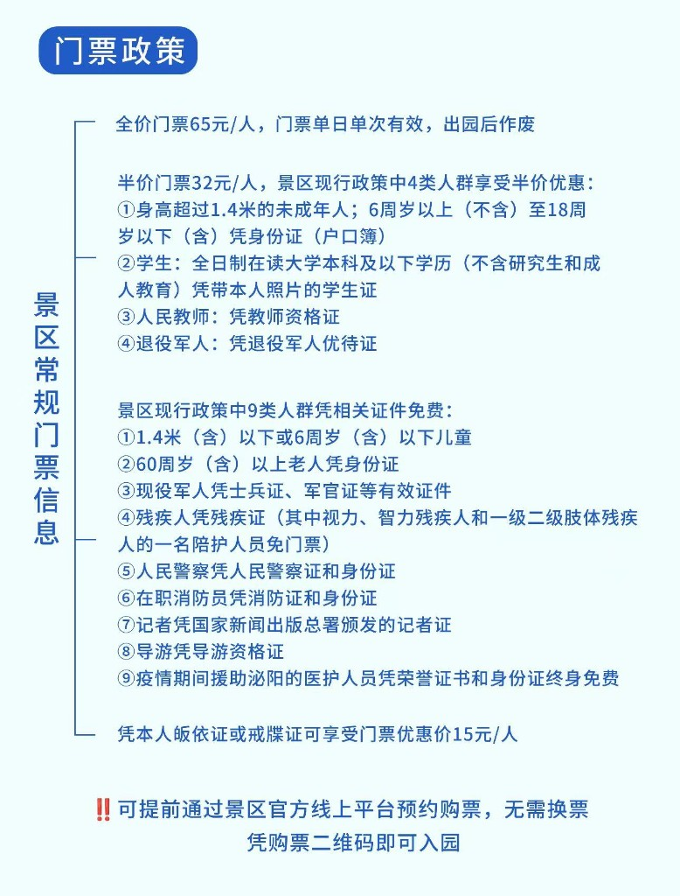
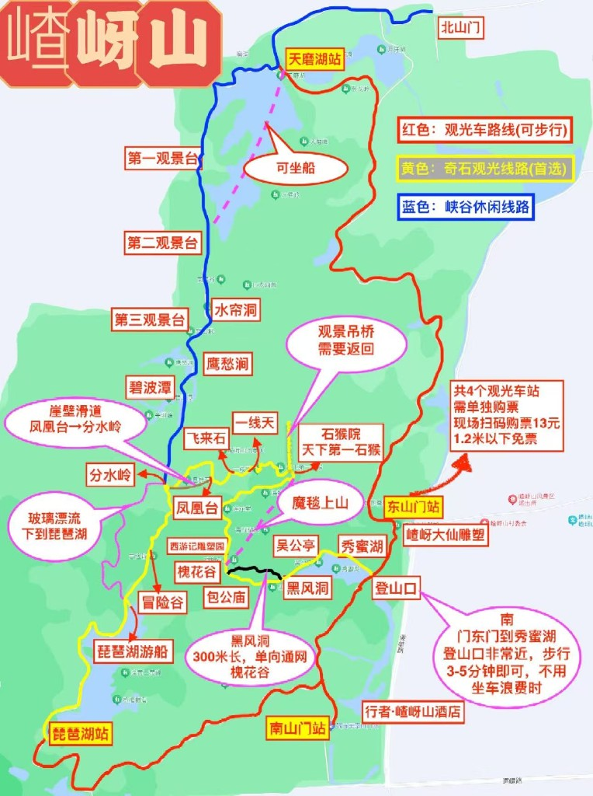

游玩攻略
地址
驻马店遂平县嵖岈山南门
开放时间
7:30–17:30，17:00停止入园
门票
成人65元，学生/老人半价；1.4米以下儿童/70岁以上免票；住景区酒店在前台买票刷脸无限次入园
门票政策

交通
- 自驾：南门停车10元/天，建议8:00前到避开人流
- 公共：驻马店西站303路旅游专线，10元/人，1.5小时直达
- 代步（自费）：魔毯40元、滑道30元、游船30元、天空漂流80元；懒人套票99元（门票+魔毯+滑道）
景区游览地图

上山路线
南门入园 → 西游广场 → 秀蜜湖 → 黑风洞 → 槐花谷 → 动物石界 → 包公庙 → 五龙宫 → 西游记雕塑园 → 石猴院 → 网红吊桥 → 天下第一石猴 → 一线天 → 吴公洞 → 飞来石 → 凤凰台 → 登顶
下山路线
从山顶沿指示牌往"下山路"方向走 → 老君花园峰 → 分水岭 → 百丈崖 → 冒险谷 → 琵琶湖 → 丞相帽石 → 炎黄二帝峰 → 观光车上车点 → 南山门
装备建议
一定要穿防滑、舒适的徒步鞋，因为台阶和部分路段很窄。建议携带登山杖、少量高热量零食、充足的水和防晒用品。